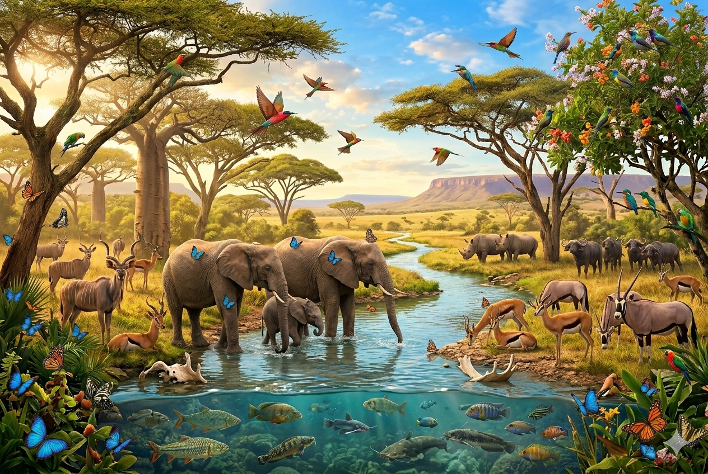
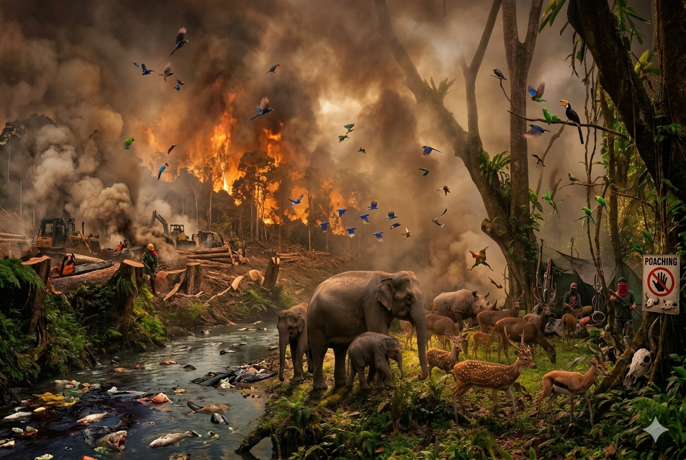
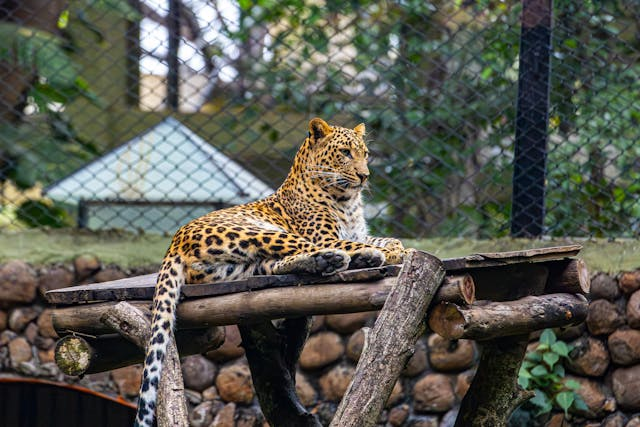
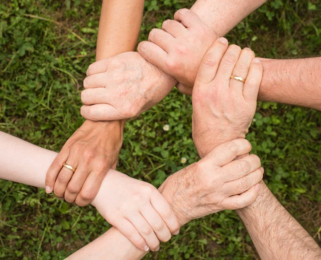

WILD LIFE PROTECTION
Explore why protecting wildlife matters, the threats our ecosystems face, and the real actions that students and communities can take to make a difference.
Importance Of Wild Life
Wildlife plays a crucial role in maintaining ecological balance and supporting life on Earth. Different species interact within ecosystems to regulate food chains, pollinate plants, and maintain soil and water quality. These interactions ensure that natural systems function effectively and remain sustainable over time. According to Guo (2025), biodiversity is essential for supporting ecosystem stability and long-term environmental resilience.
Beyond environmental values wildlife also supports human life by contributing to food security, medicine , tourism, and cultueal identity. Protecting willife is therfore essential not only for nature,but for sustainable human development.

Major Threats to Wildlife

Despite its important,wildlife is increasingly under threat due to human activites.RApid urbanization, deforestation, and industrial expansion have led to the destruction of natural habitats. As a result, many species are losing their homes and struggling to survive.
- Habitat destruction from deforestation and development
- Illegal hunting and wildlife trade
- Climate change and environmental shifts
- Pollution affecting land and water ecosystems
Climate change is another significant factor, as it alters ecosystems and affects species’ ability to adapt. Unsustainable land use and poorly planned development are identified as key drivers of biodiversity loss (Chango-Cañaveral et al., 2025). For example, expanding tourism infrastructure without environmental planning can damage ecosystems and reduce wildlife populations.
Conservation and Protection Efforts
To address these challenges, conservation efforts focus on protecting natural habitats and restoring damaged ecosystems. Governments and organisations have established protected areas such as national parks and wildlife reserves to safeguard biodiversity.
Ecological Restoration
Restoration goes beyond protection it actively rebuilds damaged ecosystems. Replanting native trees, removing invasive species, reintroducing locally extinct animals, and rehabilitating wetlands are all part of this approach. According to Reeya et al. (2024), restoration of degraded landscapes is now considered essential for achieving the long-term biodiversity targets set under SDG 15, and must be scientifically designed to match local ecological conditions rather than applying a one-size-fits-all approach.
Wildlife Corridors
Isolated protected areas are not enough if the species within them cannot move, interbreed, or migrate. Wildlife corridors strips of habitat connecting protected areas allow animals to move safely through human-dominated landscapes, maintaining genetic diversity and enabling seasonal migration. Their design and protection is increasingly recognised as essential to the long-term viability of wildlife populations.

Global and Local Conservation Responses
National-Level Responses
Many countries have significantly strengthened their national biodiversity strategies in recent years. Costa Rica, often cited as a global conservation success story, reversed decades of deforestation by paying landowners directly for the ecosystem services their forests provide — a model now being replicated in other tropical nations. In Sri Lanka, the National Biodiversity Strategic Action Plan outlines commitments to expanding protected areas, restoring degraded habitats, and addressing invasive species
- Payments for Ecosystem Services: governments and NGOs pay landowners to maintain forest cover
- National Biodiversity Action Plans: legally binding roadmaps for species and habitat protection
- Wildlife crime units: specialist law enforcement focused on poaching and trafficking networks
- Trans-boundary protected areas: neighboring countries cooperating to protect shared ecosystems/li>
The Role of Science and Technology
Modern conservation increasingly relies on technology to monitor wildlife populations and detect threats in real time. Satellite imagery, GPS tracking collars, acoustic monitoring of bird and bat populations, environmental DNA (eDNA) analysis from water samples, and AI-powered camera traps are all transforming the speed and accuracy with which conservationists can understand and respond to biodiversity change. Apps like iNaturalist allow ordinary citizens to contribute observation data that feeds directly into scientific databases used for SDG 15 reporting.
What You Can Do

Individuals, especially students, play an important role in wildlife protection. Small actions can contribute significantly to conservation efforts when practiced consistently.
You can do:
- Support wildlife conservation organisations and awareness campaigns
- Avoid buying products made from endangered animals
- Reduce waste and pollution to protect natural habitats
- Participate in tree planting and environmental programs
- Promote sustainable and eco-friendly tourism practices
For example, students in Sri Lanka can take part in local conservation projects and awareness programs to protect biodiversity. These actions help create a sense of responsibility towards nature and contribute to achieving SDG 15.
Conclusion
In conclusion protecting wildlife is crucial for keeping our planets ecosystem in balance and supporting life on Earth. Wildlife faces dangers because of things people do but if we work together with good plans and take action we can reduce losing different kinds of plants and animals. When we make choices and live in a way that is good for the Earth we and the communities we live in can help protect animals and plants, for the people who will live on Earth in the future.